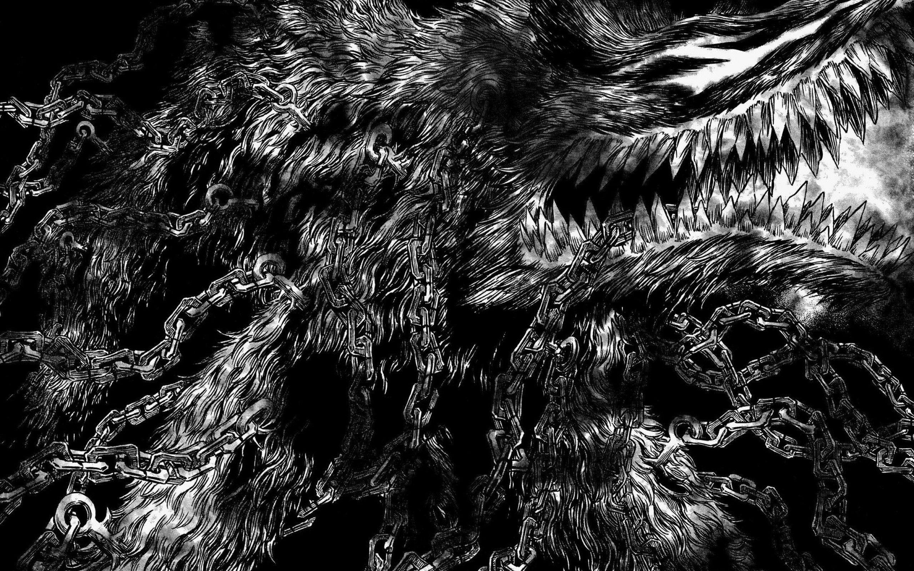
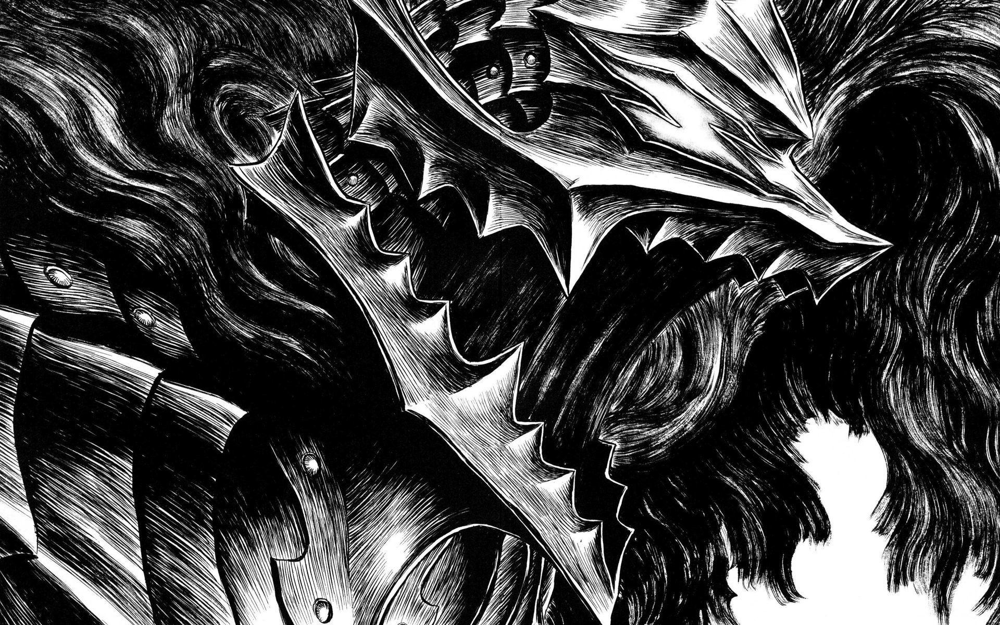
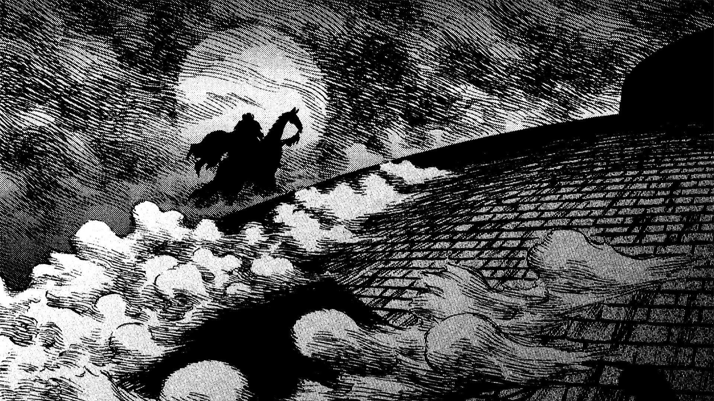
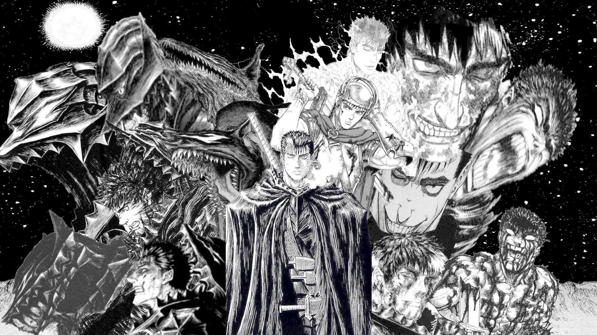
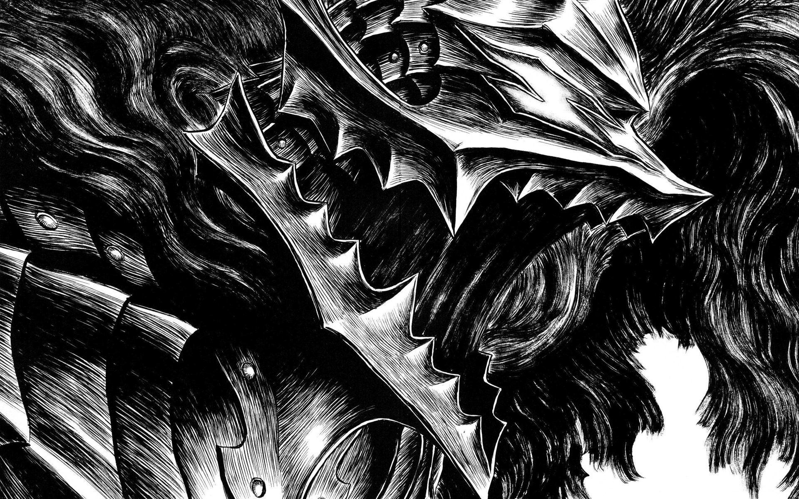
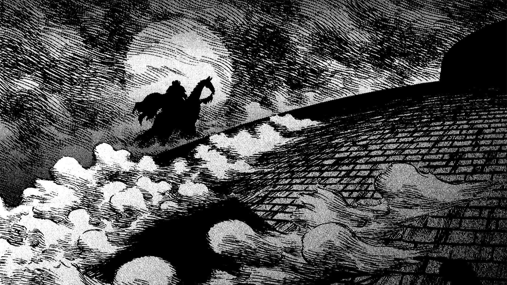
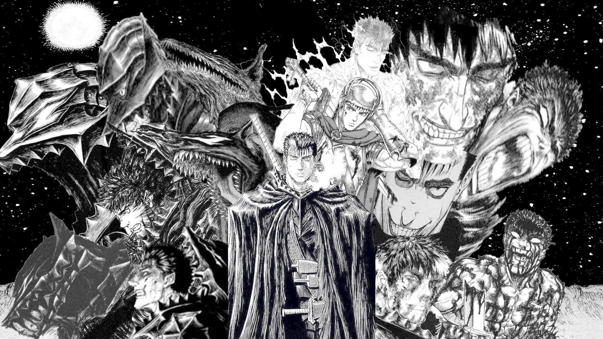
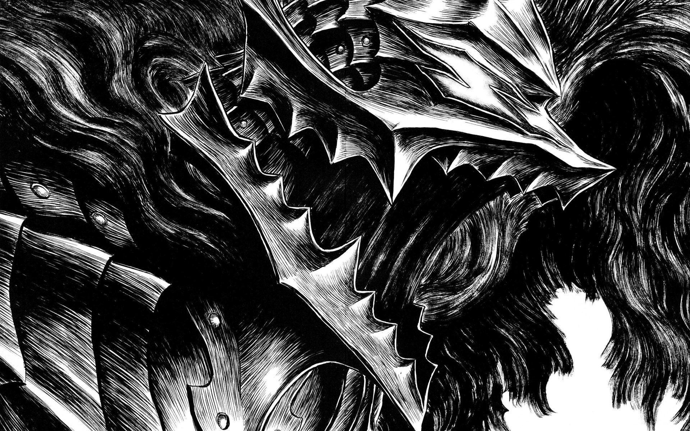
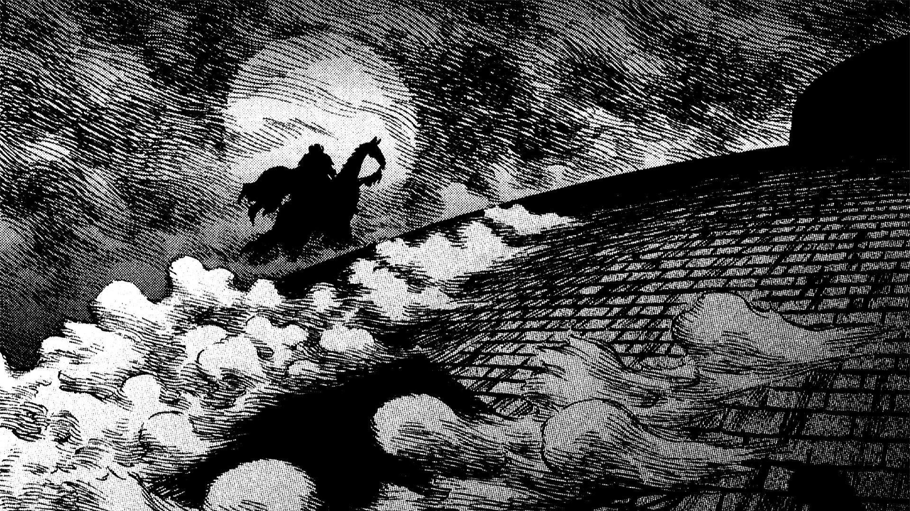
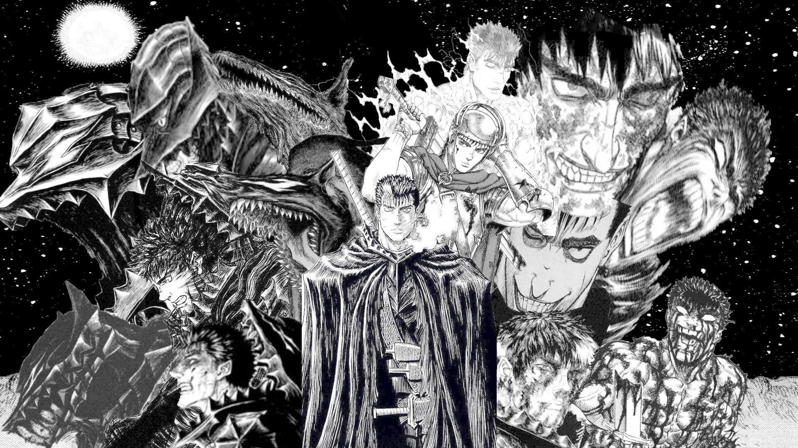

The Return of the Black Swordsman: Berserk
The tale of Guts
Blood stains the earth where hope once dared to grow. Beneath a sky bruised by the screams of the fallen, Guts carves his path through a world of betrayal and agony. Each swing of his massive blade defies fate-a howl against the darkness closing in. Shadows gather not just in the night but within men: Griffith’s ambition burns cold and bright, while Casca’s courage flickers amid war’s storm. Even the strongest bonds are torn apart by dreams too grand for mortals. Haunted by loss and driven by rage, Guts presses on-a battered soul in a land where mercy is forgotten. In this endless struggle, every scar tells a story, and every step forward is a triumph over a destiny written in suffering and blood.
Archive of Sacrifice

 








Characters
Guts
Haunted by shadows and driven by rage, Guts carves his path through a world steeped in darkness. With the Dragonslayer in hand and scars as his armor, he stands as the storm against fate itself-unyielding, unstoppable, unforgettable.
Griffith
With a gaze that pierces destiny, Griffith inspires both loyalty and fear. His dreams soar higher than any man’s reach, and behind his angelic smile lies the will to sacrifice all for a kingdom built on ambition and blood.
Casca
Once a beacon on the battlefield, Casca is the flame that endures in the night. Her spirit, tested by love, war, and betrayal, shines with a courage that refuses to be extinguished even in the darkest eclipse.
"My place really was here. I was too foolish and stubborn to notice. But, what I truly hoped for then was here. Why do I always realize it... when I've already lost it."
~ Guts